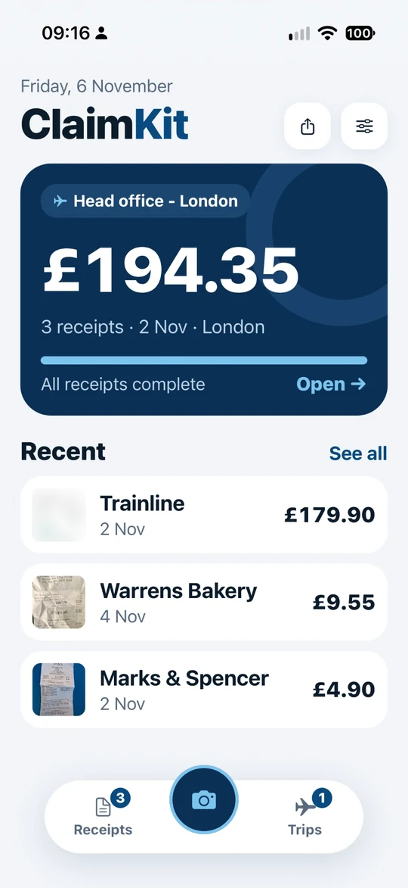
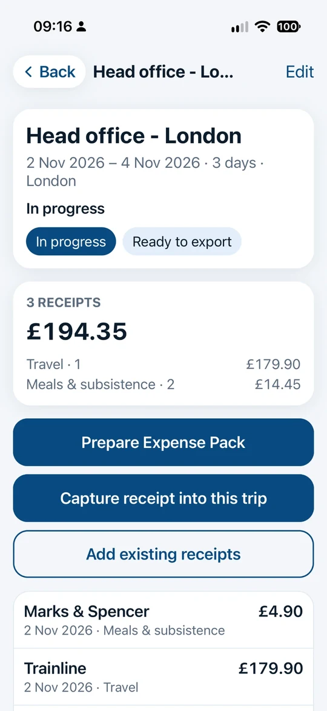
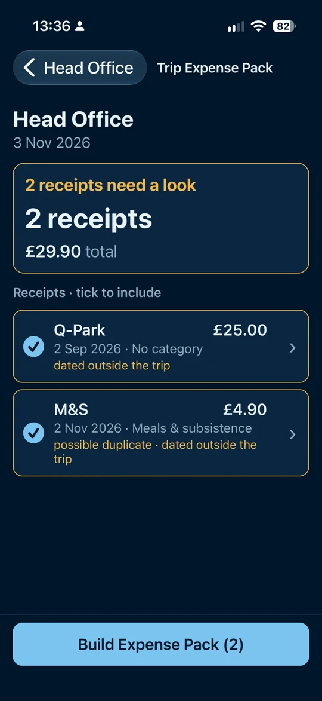

Not another accounting app
Most expense tools are built for finance teams and want to plug into everything. ClaimKit is for one person who just wants the receipts sorted.
Made for one person
No team set-up, no approvals, no admin. Open it, snap the receipt, carry on with your day.
Nothing to connect
It isn’t tied to any accounting software. You decide what to claim, and send only that, wherever your numbers live.
Private by design
No sign-up, no adverts, no tracking. Your receipts live on your iPhone, not on our servers.
How it works
- Snap it. Photograph a receipt. ClaimKit reads the shop, date, total and VAT on your phone and fills the form in for you to check.
- Keep it. Every receipt in one place, with a category, ready when you need it. Back up and restore any time.
- Group it. Put receipts into trips, see the totals, and get a warning about duplicates before you claim twice.
- Send it. Build an expense pack: a ZIP with the receipt images, a PDF summary and a spreadsheet (CSV).



Who it’s for
- Anyone who keeps their own receipts and wants them ready when they need them
- People who claim expenses back from an employer or a client and want a clean pack to send
- Anyone who dreads the shoebox of receipts at the end of the year
ClaimKit helps you keep and organise your receipts. It isn’t tax or accounting advice.
Reading receipts, privately
ClaimKit reads receipts on your iPhone using Apple’s text recognition. Nothing leaves your phone for that. If you choose to, it can also ask an online AI reader about a receipt the phone is unsure of. It always asks your permission first, and the app works fully if you say no. Exactly how your data is handled.
Price
Free for 3 days, then £5.99 a month
The free trial includes up to 5 receipts a day. After the trial you can still view, search, export and back up everything you saved. Adding new receipts needs a subscription, which you can cancel any time in your Apple ID settings. See the terms.
Questions
Do I need accounting software?
No. ClaimKit works on its own. You can send an expense pack (receipt images, a PDF and a spreadsheet) to your accountant, client or employer, or keep it for your records.
Where are my receipts stored?
On your iPhone. There’s no ClaimKit account and nothing is uploaded unless you choose the optional AI reading. Use Backup & restore to keep a copy somewhere safe.
What does the AI reading send, and who sees it?
Only if you allow it, and only for a receipt the phone can’t read confidently: a reduced-size copy of that receipt goes through ClaimKit’s server to Anthropic’s AI, which sends back the details. Nothing is stored. The privacy page explains it in full.
What happens when the free trial ends?
Everything you saved stays yours. You can still view, search, export and back up. To keep adding new receipts you subscribe for £5.99 a month, and you can cancel any time.
Is it available outside the UK?
Not yet. ClaimKit launches in the United Kingdom first.
Got a question?
See the support page or email support.claimkit@icloud.com.